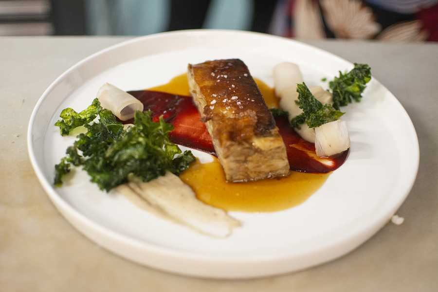

Cochinillo
Pepe Rodriguez
El cochinillo asado con puré de castañas y tamarindo. Se trata de uno de los platos clásicos de Pepe Rodríguez. En el restaurante lo interpretan en este lingote de cochinillo asado a baja temperatura y que acompañan de castaña en puré y una salsa de tamarindo que da el toque de acidez.